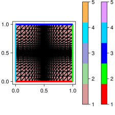
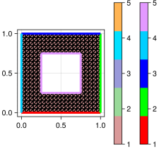
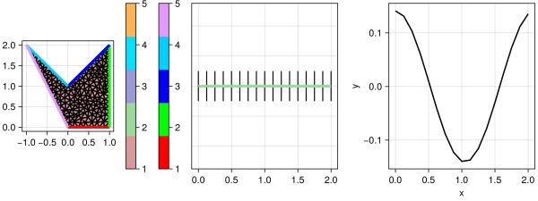

2D Grid examples
using Triangulate, ExtendableGrids, SimplexGridFactoryRectangle
function rectangle()
X = collect(0:0.05:1)
Y = collect(0:0.05:1)
simplexgrid(X, X)
endRectangle with local refinement
function rectangle_localref()
hmin = 0.01
hmax = 0.1
XLeft = geomspace(0.0, 0.5, hmax, hmin)
XRight = geomspace(0.5, 1.0, hmin, hmax)
X = glue(XLeft, XRight)
simplexgrid(X, X)
end
Rectangle with multiple regions
function rectangle_multiregion()
X = collect(0:0.05:1)
Y = collect(0:0.05:1)
grid = simplexgrid(X, Y)
cellmask!(grid, [0.0, 0.0], [1.0, 0.5], 3)
bfacemask!(grid, [0.0, 0.0], [0.0, 0.5], 5)
bfacemask!(grid, [1.0, 0.0], [1.0, 0.5], 6)
bfacemask!(grid, [0.0, 0.5], [1.0, 0.5], 7)
endSubgrid from rectangle
function rectangle_subgrid()
X = collect(0:0.05:1)
Y = collect(0:0.05:1)
grid = simplexgrid(X, Y)
rect!(grid, [0.25, 0.25], [0.75, 0.75]; region = 2, bregion = 5)
subgrid(grid, [1])
end
Rect2d with bregion function
Here, we use function as bregion parameter - this allows to have no bfaces at the interface between the two rects.
function rect2d_bregion_function()
X = collect(0:0.5:10)
Y = collect(0:0.5:10)
grid = simplexgrid(X, Y)
rect!(grid, [5, 4], [9, 6]; region = 2, bregions = [5, 5, 5, 5])
rect!(grid, [4, 2], [5, 8]; region = 2, bregion = cur -> cur == 5 ? 0 : 8)
subgrid(grid, [2])
endfunction sorted_subgrid(; maxvolume = 0.01)
builder = SimplexGridBuilder(; Generator = Triangulate)
p1 = point!(builder, 0, 0)
p2 = point!(builder, 1, 0)
p3 = point!(builder, 1, 2)
p4 = point!(builder, 0, 1)
p5 = point!(builder, -1, 2)
facetregion!(builder, 1)
facet!(builder, p1, p2)
facetregion!(builder, 2)
facet!(builder, p2, p3)
facetregion!(builder, 3)
facet!(builder, p3, p4)
facetregion!(builder, 4)
facet!(builder, p4, p5)
facetregion!(builder, 5)
facet!(builder, p5, p1)
g = simplexgrid(builder; maxvolume)
sg = subgrid(g, [2]; boundary = true, transform = (a, b) -> a[1] = b[2])
f = map((x, y) -> sin(3x) * cos(3y), g)
sf = view(f, sg)
g, sg, sf
end
CI callbacks for ExampleJuggler.jl
Unit tests
using Test
function runtests()
@test numbers_match(rectangle(), 441, 800, 80)
@test numbers_match(rectangle_localref(), 729, 1352, 104)
@test numbers_match(rectangle_multiregion(), 441, 800, 100)
@test numbers_match(rectangle_subgrid(), 360, 600, 120)
@test numbers_match(rect2d_bregion_function(), 79, 112, 44)
g, sg, sf = sorted_subgrid()
@test numbers_match(g, 187, 306, 66)
@test numbers_match(sg, 17, 16, 0)
@test issorted(view(sg[Coordinates], 1, :))
endPlot generation
using GridVisualize
function generateplots(picdir; Plotter = nothing)
if isdefined(Plotter, :Makie)
size = (300, 300)
Plotter.save(joinpath(picdir, "rectangle.svg"), gridplot(rectangle(); Plotter, size))
Plotter.save(joinpath(picdir, "rectangle_localref.svg"), gridplot(rectangle_localref(); Plotter, size))
Plotter.save(joinpath(picdir, "rectangle_multiregion.svg"), gridplot(rectangle_multiregion(); Plotter, size))
Plotter.save(joinpath(picdir, "rectangle_subgrid.svg"), gridplot(rectangle_subgrid(); Plotter, size))
Plotter.save(joinpath(picdir, "rect2d_bregion_function.svg"), gridplot(rect2d_bregion_function(); Plotter, size))
g, sg, sf = sorted_subgrid()
p = GridVisualizer(; Plotter, layout = (1, 3), size = (800, 300))
gridplot!(p[1, 1], g)
gridplot!(p[1, 2], sg)
scalarplot!(p[1, 3], sg, sf)
fname = joinpath(picdir, "sorted_subgrid.svg")
Plotter.save(fname, reveal(p))
end
endThis page was generated using Literate.jl.